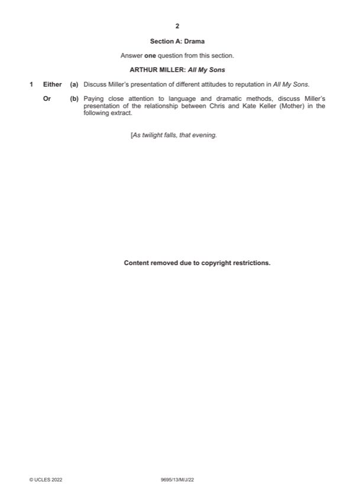

Question 1

Original paper page 2
Part 1(a) — solution
Answer: OR
Discuss Miller’s presentation of different attitudes to reputation in All 25
My Sons.
Mark according to the levels of response marking criteria.
OR
Mark points
- Correct result: OR
Part 1(b) — solution
Paying close attention to language and dramatic methods, discuss 25
Miller’s presentation of the relationship between Chris and Kate Keller
(Mother) in the following extract.
Mark according to the levels of response marking criteria.
WILLIAM SHAKESPEARE: Much Ado About Nothing
EITHER
Mark points
- Include the ideas shown in the solution above.